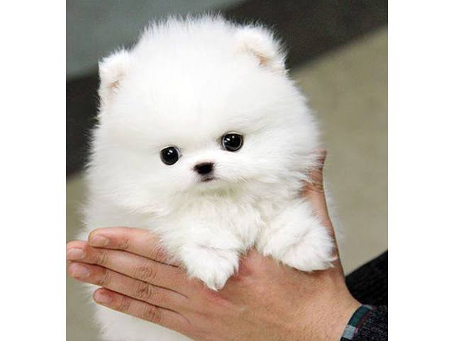

A puppy is a juvenile dog. Some puppies can weigh 1-1.5 kg (1-3 lb),while larger ones can weigh up to 7–11 kg (15-23 lb). All healthy puppies grow quickly after birth. A puppy's coat color may change as the puppy grows older, as is commonly seen in breeds such as the Yorkshire Terrier. Puppy refers specifically to young dogs,
Born after an average of 63 days of gestation, puppies emerge in an amnion that is bitten off and eaten by the mother dog. Puppies begin to nurse almost immediately. If the litter exceeds six puppies, particularly if one or more are obvious runts, human intervention in hand-feeding the stronger puppies is necessary to ensure that the runts get proper nourishment and attention from the mother.